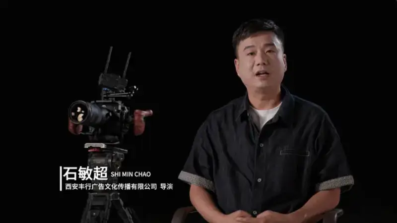
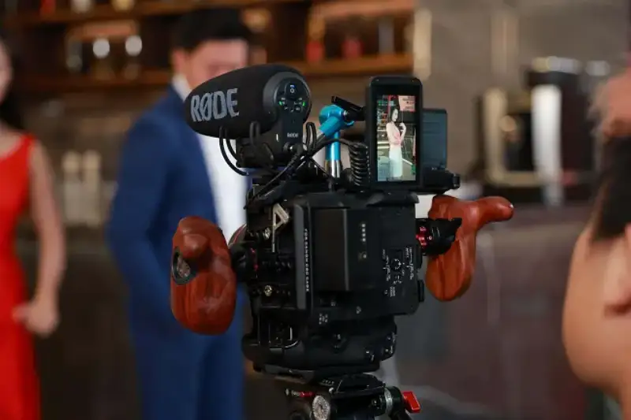
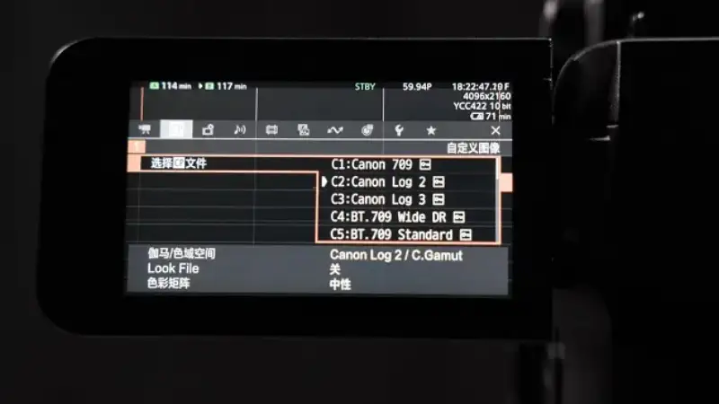
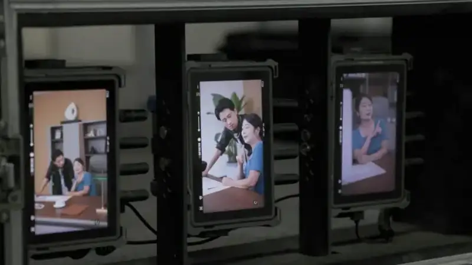
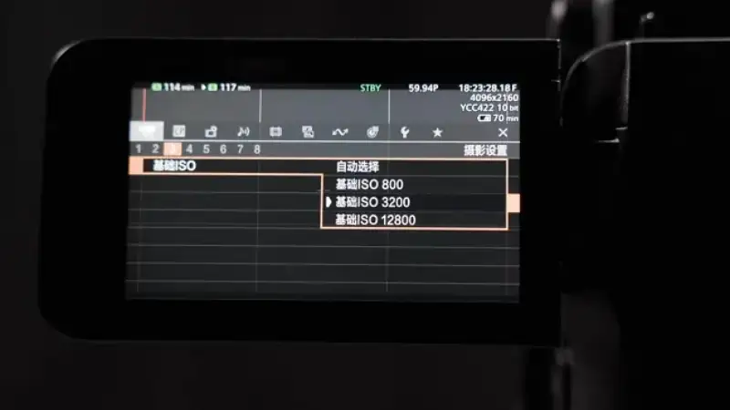
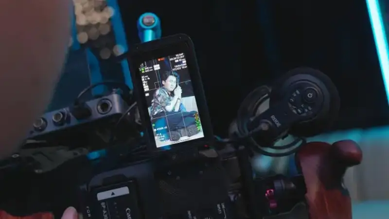
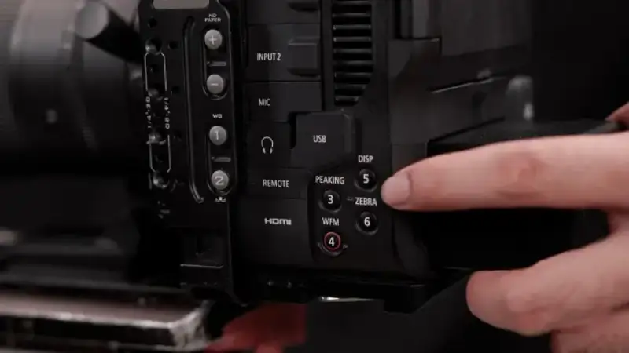
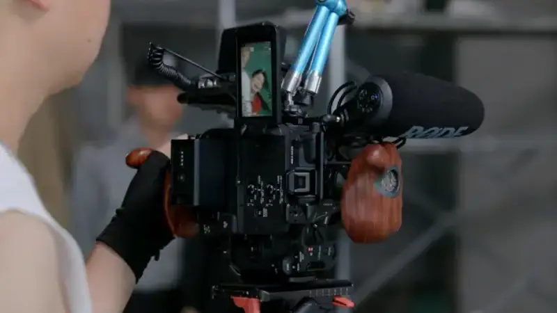
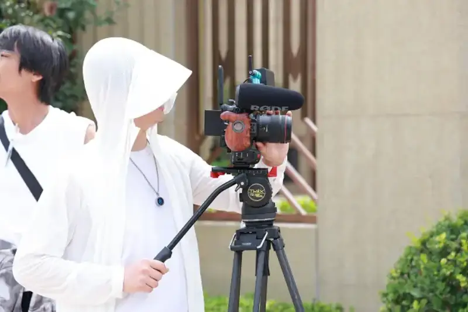

In 2025, the Chinese micro-short-drama industry entered a premium era. From content volume to production workflow, vertical short dramas are shifting toward stronger image quality and more professional processes. The industry has reached a turning point where quality and efficiency matter together. In this shift, professional equipment now plays a bigger role than before. Completing dense shoots in a very short cycle and delivering high-quality images steadily has become the key to staying at the top.
In the DataEye top-100 production list, Xi'an ranks first nationwide and is known as the capital of short dramas. Xi'an Fengxing, short for Xi'an Fengxing Advertising and Culture Communication Co., Ltd., is a leading short-drama company in Xi'an, and it has made several hit shows. Facing tighter schedules and higher platform demands on image quality, Xi'an Fengxing chose to work with Canon. It uses the EOS C80 digital cinema camera as the main camera for premium short dramas, to run projects more efficiently and express images more professionally.

Director Shi Minchao shares short-drama shooting and explains how the Canon EOS C80 supports premium short-drama work
Equipment is the base of vertical industrial production
Vertical short dramas have long been seen as light, low-budget content with little demand on cameras. The opposite is true. Although a short drama is small, the shooting pace is very dense. A shoot often lasts only a few days, from preparation to delivery. Scene scheduling is tight, spaces change often, and the shooting pace is pushed to the limit. At this point, whether the equipment runs steadily and responds fast directly decides the efficiency of the whole workflow and the final quality.
This demands imaging equipment that adapts well to the field. The Canon EOS C80 adapts well to vertical short dramas in several key areas, and more professional teams now choose it. Its design is not about stacking specs. It focuses on the real needs of a short-drama set: shooting speed, stable images, easy control, and a smooth link to post. This gives a shooting experience that matches the real work pace, and it supports high-frequency production.

The Canon EOS C80 focuses on the real needs of a short-drama set. Its design balances speed and adaptability for a dense shooting pace.
CanonEOS C80How do you raise the completeness of the image?
For a vertical short drama, a good image is not just lively. It must hold up to repeated viewing, which is true completeness. This includes consistent light and color tone, and believable skin tones and emotions.
In practice, many short dramas show overexposure, crushed blacks, or gray skin. The root is often not weak post-grading, but limits in the camera's color space and dynamic range.
The Canon EOS C80 answers this pain point. It supports the Canon-Log 2 curve and offers up to 16 stops of dynamic range. Canon-Log 2 expands midtone brightness data and leaves more room for grading later. The 16 stops make sure the sensor records the full range from black to white. Together, in indoor or outdoor scenes with extreme contrast, the image keeps smooth gradations and avoids blown highlights or lost shadow detail.

The Canon EOS C80 supports Canon-Log 2 and 16 stops of dynamic range to raise image completeness.
More important, the EOS C80 renders skin tones well. It does not use heavy digital beauty, and it does not lean cold or over-saturated. It favors a real, natural color base. This matters for short dramas built on emotion and conflict. Subtle skin changes and tone are a key channel for viewers to feel a character. The realistic color of the EOS C80 is the base for that empathy.

The Canon EOS C80 renders real skin tones and helps convey a character emotion to the viewer.
On a real set, the EOS C80 not only raises image quality, it also speeds up post. A colorist does not spend long building a LUT from scratch. Based on the stable tone of the footage, they can quickly deliver a unified look.
Using high ISOISOMake clean night scenes
In vertical short dramas, night scenes are the easiest place to fail. With little time, limited lights, and rented spaces rather than a lit studio, night shoots often struggle between good enough and noisy. The image then shows visible noise, weak color, and lost layers. This weakens the viewer's immersion and harms the quality of the work.
The improved high-ISO performance of the Canon EOS C80 gives a more flexible answer to the low-light scenes common in vertical short dramas. Its CMOS sensor supports three native ISOs. The new ISO 3200 setting, compared with older cameras, covers more medium and low light. It reduces the need to add light often or sacrifice quality because of weak light.

Three native ISOs handle different scenes easily, and reduce noise and the need for fill light.
In night scenes or dark settings, the EOS C80 keeps good detail and color at high ISO. It is still usable at ISO 12800, with no extra noise reduction, so the image stays clean. This raises shooting speed and makes shoot on location possible, and it cuts the need for on-set lights. High ISO is no longer a compromise. It becomes a tool to set the mood and strengthen emotion. For a short drama that shoots many shots at a fast pace, this means more freedom and lower cost.

The Canon EOS C80 controls noise well, and the image stays clean in low light.
Small details build a true fast-shooting system
The fast update cycle of vertical short dramas demands high efficiency on set. Each day brings many scene changes, cast changes, and prop changes, and shooting time is already tight. If the equipment is slow or complex to adjust, it hurts the whole pace and cuts the little time available. Here, the hardware and control logic of the Canon EOS C80 truly fit fast on-set shooting.
The built-in ND filter system greatly helps outdoor shooting. In the old way, you manually fitted an external ND filter in bright light, which took time and often broke the pace. With the EOS C80's built-in ND system, the shooter switches with one tap based on the ambient light, without sacrificing shutter speed or aperture. This keeps the image continuous and the shoot smooth.
The body also has 13 custom shortcut buttons, which give great flexibility in high-frequency work. Different shooters can assign functions quickly to their own habits. This lets parameter changes, white balance, and focus peaking become muscle memory, so the shooting feel is truly under control.

13 custom shortcut buttons raise the speed of short-drama shooting.
For dynamic work, the autofocus and continuous tracking of the EOS C80 are also steady. In vertical shooting, the subject moves often, and a focus miss directly hurts the center of the frame. Even in complex staging or multi-person scenes, the EOS C80 correctly finds and locks the lead, and cuts the retakes and delays caused by focus errors.

The Canon EOS C80 autofocus is steady, cuts retakes, and keeps vertical shooting smooth.
Equipment sets the ceiling is becoming the industry view
As the industry moves into professional mass production, the role of equipment in short dramas is changing. From a simple tool, it becomes a core factor that affects efficiency. Choosing equipment is now a key way for a team to raise shooting speed, secure image quality, and improve delivery.
In practice, the effect of equipment on a project's ceiling shows in three ways. First, is the shooting pace controllable, and can it handle heavy staging and last-minute changes? Second, is the post load controllable, including extra work in grading, noise reduction, and lens correction? Third, does the overall delivery scale, and can it support several shows released each month?
The strength of the Canon EOS C80 is that it is not a spec-stacking or show-off camera. From the front line of work, it gives a systematic answer to real short-drama sets and platform standards. From image to control, and from shooting to post, the EOS C80 gives teams steady, fast, and controllable support at key points. It helps short-drama production move from quantity to quality, and build a clearer, more professional workflow.

The Canon EOS C80 fits short-drama needs and gives technical support for higher quality and speed.
As some top teams start to combine a film-industry workflow with professional imaging equipment, the light, highly adaptable solution of the Canon EOS C80 is drawing more makers. It answers today need for both speed and quality, and it gives content teams new support for a more controllable, higher-quality process. This trend may point to the next technical step for the short-drama industry.
Short dramas are moving from a traffic-driven model to a fuller expression of emotional resonance, brand value, and visual quality. In this shift, equipment is no longer just behind the scenes. It plays a key role in more and more creative decisions. Its image control, shooting speed, and pacing are already a core part of the workflow, and now they are a core force that affects both quality and efficiency.